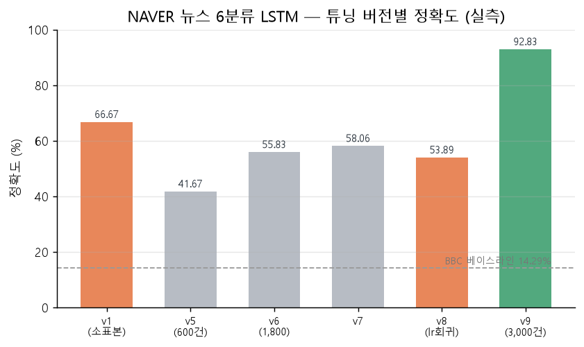

CH 01출발 — LSTM으로는 어디까지#
9주차까지 텍스트를 다루는 모델은 RNN·LSTM이었다. 순서대로 읽어 은닉 상태에 기억을 쌓는 구조는 직관적이지만, 두 가지 벽이 있었다 — 장기 의존성(뒤로 갈수록 앞이 희석)과 병렬화 불가(앞을 계산해야 뒤를 계산). LSTM이 Cell State라는 고속도로로 기억을 얼마간 지켜도, "차례로 읽는다"는 전제 자체는 그대로였다.
이번 주는 이 전제를 하나씩 무너뜨리는 이야기다. 순서는 다음과 같이 잡혔다 — 먼저 배운 LSTM을 실전 분류(NAVER 뉴스)에 부딪혀 그 한계와 진짜 레버를 확인하고, 번역에서 고정 벡터 병목을 정면으로 만나 어텐션으로 풀고, 그 어텐션만으로 RNN을 걷어낸 트랜스포머를 직접 세운 뒤, 그 구조가 커져 LLM이 되는 지점까지 간다. 다섯 개의 실습·개념이 "순서를 어떻게 다루나"라는 한 물음으로 꿰였다.
CH 02NAVER 뉴스 분류 — 데이터가 가른 92.83%#
0630엔 한국어 뉴스를 6개 카테고리(IT·스포츠·사회·경제·연예·정치)로 나누는 LSTM 분류기를 다뤘다. NSMC 감성 2분류(긍/부정) 코드에서 출발해, 마지막 Linear의 출력 차원을 2→6으로 늘리고 정확도 지표를 multiclass로 맞추면 뼈대는 그대로 넘어왔다. 임베딩 → LSTM(마지막 은닉상태) → 선형층이라는 구조는 v1부터 v9까지 한 번도 바뀌지 않았다. 바뀐 것은 데이터와 전처리였다.
여기서 첫 의문이 생겼다. 구조를 표준으로 맞추고 Optuna로 하이퍼파라미터까지 자동 탐색했는데, 초기 버전 정확도가 오히려 낮았다. 내장 샘플 150건으로 돌린 v1이 테스트 66.67%로 가장 높았고, 실제 뉴스를 크롤링해 넣기 시작한 v2·v3에서 30.77% → 25.0%로 떨어졌다.
v1 66.67% (샘플 150건) v3 25.00% (120건) v4 36.67% (300건) v5 41.67% (600건) v6폴더 55.83% (1,800건·형태소) v7 58.06% v8 53.89% (lr 낮춰 회귀) v9 92.83% (3,000건) ⭐ 557/600 정답 KoELECTRA 파인튜닝 val_acc 최고 0.9618 (300건/카테고리로 LSTM 500건 넘김)
답은 데이터였다. v1의 샘플은 카테고리 경계가 깔끔했지만 실제 크롤링 헤드라인은 "연예인 스포츠 기사"처럼 경계가 흐렸고, v3은 120건 ÷ 6카테고리라 학습이 카테고리당 약 13건뿐이라 절대량이 부족했다. 구조를 손대지 않고 클래스당 100건 → 300건 → 500건으로 데이터만 키우자 41.67% → 55.83% → 92.83%로 올랐다. 보고서 기여도 정리로도 데이터 확대가 가장 큰 몫(3배 약 +14%p, 5배+재탐색 약 +34%p)이었고 Optuna 튜닝 자체는 +3~6%p였다.

데이터 다음 레버는 형태소와 조기종료였다. 공백으로 자르면 "뉴스가/뉴스를/뉴스는"이 전부 다른 토큰이 되어 사전이 낭비되므로, KoNLPy Okt로 형태소를 쪼갰다. 흥미로운 반전은 데이터가 부족한 v6폴더(1,800건)에선 Optuna가 형태소를 골랐지만, 충분한 v9(3,000건)에선 명사만으로도 안정적이라 형태소를 안 골랐다는 점이다. 조기종료 기준을 val_loss 최소에서 val_acc 최대로 바꾼 v7에선 +2.23%p가 올랐다. 반대로 v8에서 lr을 0.00465→0.001로 낮췄더니 스케줄러가 lr을 너무 빨리 감쇠시켜 오히려 58.06%→53.89%로 떨어졌다 — "lr은 낮을수록 안전"이 소규모 데이터에선 역효과였다.
CH 03번역 모델 — 고정 벡터 병목과 어텐션#
0701엔 기계번역의 진화를 훑었다 — 규칙·통계 기반(PBMT)에서 신경망(Seq2Seq)으로, 다시 어텐션으로. PBMT는 문장을 구절 단위로 쪼개 통계 확률로 조립하는 방식이라, 구절별로 옳게 번역해도 이어 붙인 어순과 문맥이 어색해졌다. 그래서 다음 세대는 문장을 쪼개지 말고 통째로 이해하자는 Seq2Seq로 갔고, 인코더가 원문을 하나의 고정 길이 벡터(문맥 벡터)로 압축해 디코더에 넘겼다.
문제는 그 "하나의 고정 길이"였다. 5단어 문장도 512개 숫자, 100단어 만연체도 똑같이 512개 숫자에 담아야 한다면 긴 문장에서 정보가 넘쳐흘렀다. 여기서 핵심을 하나 배웠다 — 병목의 정체는 용량이 아니라 구조였다. 512차원이 부족해서가 아니라, "문장 길이와 무관하게 항상 벡터 하나로 요약을 강제한다"는 설계 자체가 병목이었다.
그 답이 어텐션이었다. 인코더 모든 시점의 은닉 상태를 후보로 두고, 디코더가 매 출력 시점마다 스코어→softmax→가중합으로 그때 필요한 문맥 벡터를 새로 만든다. 하드 탐색(하나만 딱 고름)은 원-핫처럼 값이 뚝 끊겨 기울기가 0이라 못 배우지만, 소프트 탐색(0~1 연속 확률로 비중대로 훑기)은 표준 역전파로 학습된다. 그래서 "정렬(어디를 볼지)과 번역(무엇을 낼지)을 함께 학습"한다는 말이 성립했다 — 과거 통계 방식에서 사람이 따로 계산하던 정렬을, 어텐션 가중치 α로 모델이 스스로 정하고 그 α까지 최적화된다.
이 계보를 실습 프로젝트 smart_translator에서 손으로 확인했다. 문자 단위 Seq2Seq RNN으로 만들어 둔 한↔영 번역기를, CSV 144쌍에 <EN2KO>·<KO2EN> 방향 토큰을 붙여 288 방향쌍으로 확장하고 Transformer로 통째로 교체했다.
학습 로그 Epoch[001/150] loss 4.7774 … Epoch[150/150] loss 0.0545 데이터 CSV 144쌍 → <EN2KO>/<KO2EN> 방향토큰 288 방향쌍 검증 exact-lookup 우선 288/288(1.0000) · 순수 생성 263/288(0.9132) · 판정 PASS
see you tomorrrr…처럼 반복하거나 철자를 흘렸는데(144쌍·greedy decoding의 한계), 앱은 CSV에 있으면 translation memory로 먼저 답하고 없을 때만 생성해 288/288을 안정화했다. 모델 성능과 제품 품질은 다른 문제였다.
(자세히: 번역 모델 구조)CH 04트랜스포머 — 순환을 버리다#
0702, "Attention Is All You Need". 초록의 한 문장 "dispensing with recurrence and convolutions entirely" — 순환과 합성곱을 완전히 없앤다 — 을 읽으며 처음엔 걸렸다. 그동안 biRNN이 하던 일이 뭐였는데 그걸 생략하겠다는 건가. 정리해 보니 biRNN이 하던 일은 결국 "이 단어 주변에 어떤 단어가 같이 쓰였나"를 정방향·역방향으로 훑어 양방향 문맥을 만드는 것이었고, 트랜스포머는 그걸 문장 안 모든 단어가 서로를 동시에 쳐다보는 self-attention으로 통째로 대체했다.
self-attention은 각 단어를 Query·Key·Value 세 역할로 복제해 softmax(QKᵀ/√d_k)·V로 계산한다. 여기서 RNN을 버려 얻은 두 이득이 나온다 — 병렬화와 장거리다. biRNN은 t−1이 끝나야 t를 계산하니 N단어면 N단계를 기다리지만, 트랜스포머는 N×N 어텐션 맵을 GPU가 한 번의 행렬 곱으로 동시에 계산한다. 첫 단어와 만 번째 단어의 관계도 거리 페널티 없이 한 스텝에 나온다. 이 둘은 사실 "모든 단어를 한 평면에 펼쳐 직접 관계를 매긴다"는 같은 구조의 두 얼굴이었다.
TransformerTranslator: nn.Transformer(d_model=64, nhead=4, enc/dec 각 1층, dim_ff=128) d_k = 64/4 = 16 → 스케일 √d_k = 4 | vocab 223 · max_seq_len 128 · 학습형 위치임베딩 모델 크기 556,035 bytes · 최종 loss 0.0545 · 검증 PASS(char_transformer)
순서는 위치 인코딩으로 임베딩에 더한다. 논문은 sin/cos를 쓴다 — 유계(−1~1)라 값이 임베딩을 압도하지 않고, 삼각함수 덧셈정리로 상대 거리 규칙을 쉽게 배우며, 주기함수라 학습 때 안 본 길이도 외삽된다. 그런데 실습에서 논문과 갈렸다. 내 코드는 sin/cos가 아니라 nn.Embedding(max_seq_len, d_model), 즉 학습형 위치 임베딩을 쓰고 있었다. 처음엔 틀린 줄 알았는데, 논문 3.5절이 두 방식을 실험으로 비교하고 "거의 동일한 성능"이라 적으면서도 외삽을 기대해 sin/cos를 택했다고 밝힌 대목을 보고 납득했다. 내 실습은 최대 문장 32자·max_seq_len 128로 길이가 유한하니 외삽이 필요 없어 구현이 간단한 학습형을 골랐을 뿐이다.
config를 논문 base와 나란히 놓으면 "같은 구조를 규모만 줄인 것"이 분명해진다 — d_model 64(논문 512), nhead 4(8), FFN 128(2,048), 층수 각 1(각 6). d_model=64를 nhead=4가 나눠 헤드당 d_k=16이 되고, softmax 안 √d_k는 √16=4다. 다섯 장의 개념(임베딩+위치·√d_model 스케일·멀티헤드·FFN·마스크)이 model.py 90여 줄에 거의 1:1로 앉았고, 라이브러리가 감춘 건 어텐션의 행렬 연산뿐, 차원·헤드·층수·위치 방식 같은 설계 결정은 전부 개념을 알아야 채우는 빈칸이었다.
CH 05LLM의 시작 — 트랜스포머가 거대해지면#
0703엔 교과목 3의 다음 단원, LLM으로 넘어갔다. 노트를 정리하다 계속 걸린 지점이 있었다 — 트랜스포머는 Attention Is All You Need에서 본 '구조'일 뿐인데, 그게 어떻게 번역·요약·질의응답을 한꺼번에 하는 '하나의 제품'이 됐나. 강의가 채워준 빈칸은 사전학습(Pre-training)과 스케일이었다. 인터넷 문서·책·코드에서 오직 "다음 토큰 맞추기"만 대규모로 반복하면 문장 구조·의미 관계·상식·코드 패턴까지 부수적으로 습득한다. GPT-3(1,750억 파라미터)가 준 메시지는 성능 수치가 아니라 "크기를 키우면 별도 세부 학습 없이 프롬프트만 바꿔 여러 작업을 한다"는 관찰이었다.
그 "따로 학습"을 직접 돌려봤다. Bert_sentiment_project에서 사전학습 백본(KoELECTRA) 위에 분류 헤드를 얹어 NSMC 감성분석을 파인튜닝했다. 핵심은 requires_grad로 어느 층을 얼리고 학습시킬지 정하는 동결 전략이었다.
전략3(부분학습) 학습가능 7.68M/112.9M(6.8%) test acc 0.7558 f1 0.7588 샘플 3/6 전략0(풀 파인튜닝) 학습가능 112.9M(100%) test acc 0.8713 f1 0.8683 샘플 6/6 독립 표본 NSMC 공식 테스트 5,000개 → 0.843 | 공개 사전학습 모델 동일셋 0.900
부분학습(6.8%만)은 빠른 대신 백본이 얼어붙어 과소적합돼 일반 문장에서 '긍정'으로 치우쳤다(6개 중 3개). 백본 전체를 푼 전략 0에서 75.6%→87.1%로 오르고 편향도 사라졌다. 무엇을 얼리고 무엇을 학습시키느냐가 곧 성능·시간의 trade-off라는 걸 표가 아니라 내 로그로 봤다. 그리고 이 파인튜닝이 채워준 빈칸이 컸다 — 트랜스포머(구조) → 사전학습 백본(BERT/GPT) → 분류 헤드 붙여 미세조정 → 특화 제품(감성분석기). 여기에 "작업마다 따로"가 아니라 "하나로 프롬프트만 바꿔"가 붙으면 LLM이 된다. GPT는 같은 전이학습 사고를 사전학습 규모로 대체했을 뿐이다.
CH 06종합 회고#
잘한 점 / 부족했던 점 / 다음 한 수
- 잘한 점 — RNN→어텐션→트랜스포머→LLM의 왜를 개념으로만 읽지 않고, NAVER 분류(92.83%)·번역기(288/288)·BERT 파인튜닝(75.6→87.1%) 세 프로젝트의 실측 로그로 뒷받침했다.
- 부족했던 점 — 트랜스포머는
nn.Transformer로 조립만 했고 어텐션 행렬 연산을 직접 짜 본 건 아니라, 어텐션 가중치를 눈으로 확인하는 시각화까지는 못 갔다. - 다음 한 수 — 작은 데이터로 트랜스포머를 직접 학습해 어텐션 맵을 시각화하고, LLM API로 프롬프트·파라미터(temperature·top-p)를 실측한다. 번역기의 순수 생성 91%는 beam search·subword 토큰화로 밀어 올려 본다.
- 병목이 다음 구조를 부른다. Seq2Seq 고정 벡터 병목 → 어텐션, RNN의 순차성 → 트랜스포머. 각 세대는 앞 세대가 무너지던 지점을 겨냥해 등장했다.
- "순서를 어떻게 다루나"가 핵심이었다. 차례로 읽기(RNN) → 전부 동시에 보기(self-attention) + 위치 인코딩으로 순서 주입. 그 대가가 O(N²) 메모리였다.
- 실전에서 성능을 가른 건 모델이 아니라 데이터·전처리였다(NAVER 41.67→92.83%). 그리고 모델 성능(생성 91%)과 제품 품질(lookup 100%)은 별개 문제였다.
- 트랜스포머 = LLM의 토대. 크게·많이 사전학습하면 프롬프트만 바꿔 여러 작업을 하는 LLM이 되고, 파인튜닝과 few-shot은 같은 목표의 두 방법이다.
📚 근거 출처
- 실습 코드·튜닝 보고서 —
llm_workspace/NAVER_NEWS_LSTM_Classifier(reports/tuning_v1~v8) - 실습 코드·검증 보고서 —
llm_workspace/smart_translator_project(src/model.py · transformer_validation_report) - 실습 코드 —
llm_workspace/Bert_sentiment_project(KoELECTRA 동결 전략별 NSMC 파인튜닝) - 강의 PDF — 자연어처리_텍스트분류 · 자연어처리_번역모델 · 자연어처리_트랜스포머 · LLM개념_API
- 공식 문서·논문 — Bahdanau(어텐션) · Vaswani "Attention Is All You Need" · HuggingFace transformers